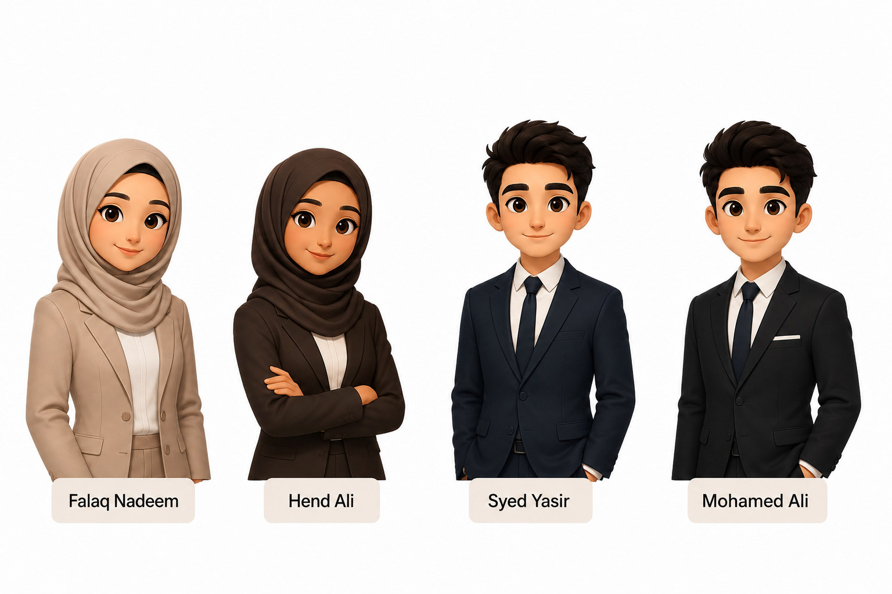

SecureGov was established to give government departments a single, accountable partner for cybersecurity, infrastructure, and digital support, so that public services stay protected and available.
Government departments manage sensitive data and deliver services that the public depends on daily - from healthcare records to utility systems. As these systems have become more connected, they have also become more exposed.
SecureGov was formed to centralise that responsibility: one agency, accountable for the security and reliability of the technology behind public services, working in partnership with every department rather than in place of them.
We embed with department IT teams, run a 24/7 Security Operations Centre, and maintain shared infrastructure standards across government. Every system we touch is logged, audited, and reviewed against national cybersecurity standards.
Departments retain ownership and visibility over their own systems at all times. SecureGov provides the expertise, monitoring, and rapid response capacity that few departments could build alone.
We hold ourselves to the same standards we expect departments to meet transparent processes, clear accountability, and no shortcuts on security.
Threats don't keep business hours, so neither do we. Our teams are structured for continuous monitoring and rapid response, every day of the year.
We aim to strengthen department teams, not replace them — sharing knowledge and tools so security expertise grows across government, not just within our walls.
| Metric | Figure |
|---|---|
| Departments protected | 14 |
| Threats neutralised (past year) | 1,200+ |
| Critical system uptime | 99.97% |
| Average incident response time | 11 minutes |
| Staff holding security clearance | 100% |

Note: Team members as characters were generated using AI image generation tool.
| Name | Student ID | Contribution | Hometown | Coding Snack | Part 1 | Part 2 |
|---|---|---|---|---|---|---|
| Falaq Nadeem | 106194653 | Home page, application form layout, GitHub deployment | Pakistan | Hot Cheetos |
|
|
| Mohamed Ali | 106404909 | Jobs page, application form submission, Jira board | Tunisia | Ice Cream |
|
|
| Syed | 106195737 | Application form fields and validation | India | Batatos |
|
|
| Hend | 106194174 | About page | Qatar | Red Bull |
|
|
We're growing our cybersecurity, infrastructure, and support teams. See what's currently open.
View open roles